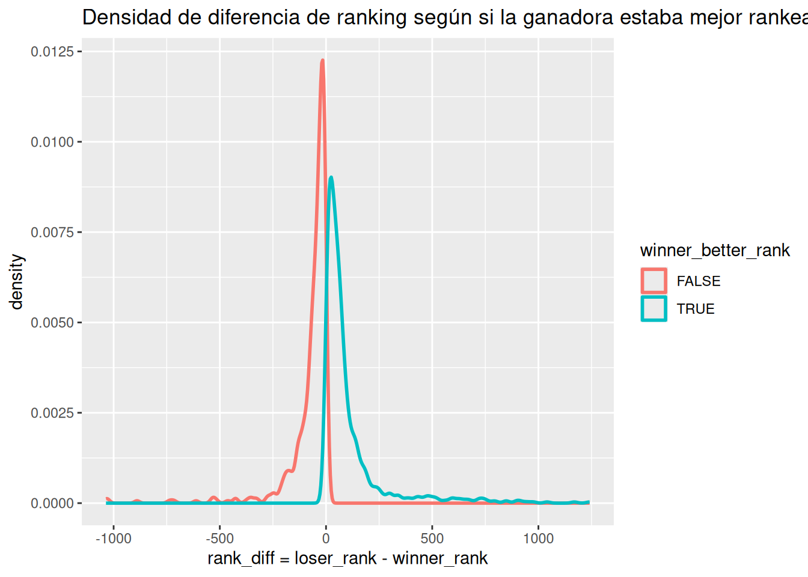
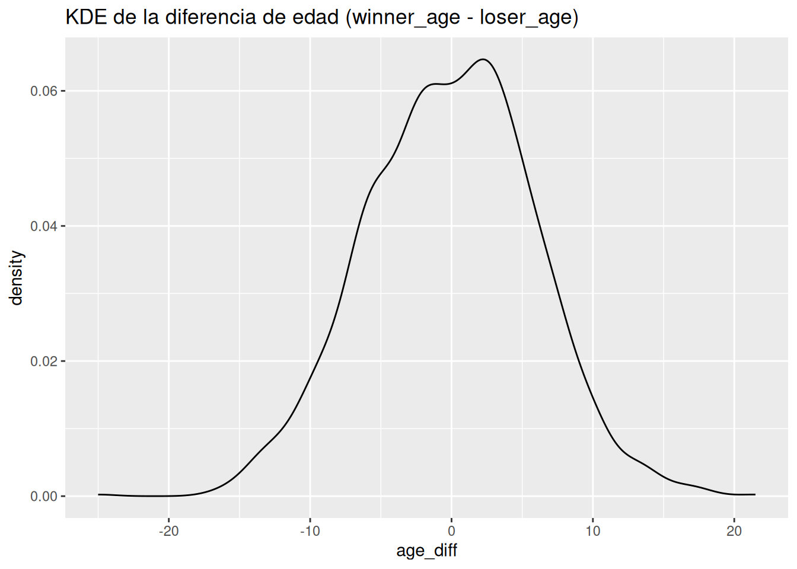
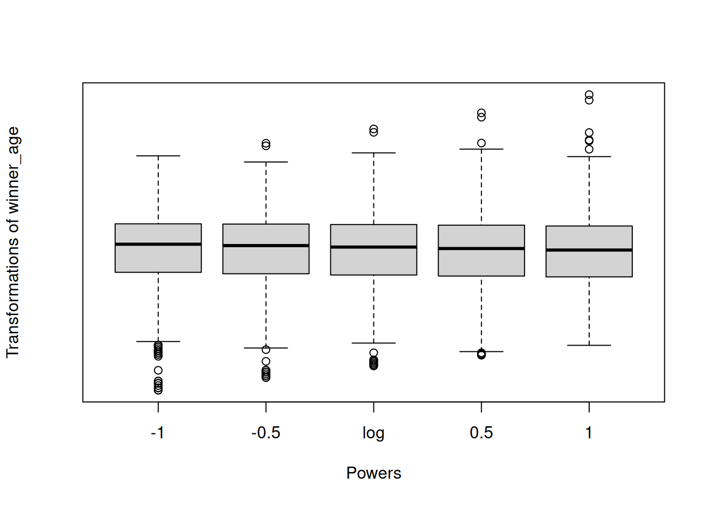

El análisis exploratorio de datos o (EDA, del inglés “Exploratory Data Analysis”) representa un conjunto de técnicas que permiten resumir los aspectos más importantes de un conjunto de datos, normalmente con especial énfasis en el uso de métodos de visualización gráfica. El término fue popularizado, entre otros, por el estadístico norteamericano John W. Tukey como método para descubrir información importante (y no evidente) contenida en los datos (Tukey et al. 1977). Estas técnicas se emplean habitualmente como paso previo a la inferencia estadística, orientada hacia un análisis confirmatorio. Así, con EDA se estudian los datos, se descubre cómo son y cómo se comportan y con la inferencia estadística se comprueba analíticamente si esos comportamientos y diferencias halladas son realmente significativos (desde un punto de vista estadístico). El EDA es, sin duda, fundamental para adquirir conocimiento de los datos, antes de emplearlos dentro de un modelo de ML como los que vais a aprendener a lo largo del grado en Ciencia e Ingeniería de Datos. Es un error muy típico de algunos analistas de datos aplicar modelos a sus datos en cuanto estos están disponibles sin pasar previamente por el necesario análisis exploratorio de los mismos.
John Tukey
“El análisis exploratorio de datos es una actitud, un estado de flexibilidad, una voluntad de buscar aquellas cosas que creemos que no están ahí, así como aquellas que creemos que están ahí.”
Es decir, el EDA no sigue un proceso formal con normas estrictas. Más bien, es una mentalidad o enfoque. En otras palabras, una forma de hacer las cosas. Cuando lleves a cabo un EDA, debes sentirte libre para explorar todas las ideas que se te ocurran. Algunas de estas ideas serán fructíferas, mientras que otras pueden llevarte a callejones sin salida. No te preocupes, probablemente no hayas roto nada. Simplemente habrás “gastado” tiempo. A medida que sigas explorando, te enfocarás en áreas particularmente prometedoras, las cuales documentarás y compartirás con otros.
A menudo se necesita mucho tiempo para explorar los datos. Se dice que el 80% del tiempo del proyecto se gasta en EDA. A través del proceso de EDA, podemos pedir que se redefina el enunciado del problema o la definición de nuestro conjunto de datos, lo cual es muy importante.
Para recordar
Cuando nos enfrentamos a un EDA, lo ideal es contar con un objetivo que se haya definido junto con los datos, indicando qué se quiere conseguir a partir de ellos. Por ejemplo, “predecir las ventas en los próximos 30 días”, “estimar el riesgo que tiene un paciente de no superar una determinada operación quirúrgica”, “clasificar como fraudulenta, o no, una página web”, etc.
EDA es un ciclo iterativo:
Genera preguntas sobre los datos.
Busca respuestas visualizando, transformando y modelizando los datos.
Utiliza lo que hayas aprendido para refinar las preguntas y/o generar otras nuevas.
3.1 Preguntas
Tu objetivo principal durante el EDA es adquirir una comprensión profunda de los datos. La forma más sencilla de hacerlo es utilizar preguntas como herramientas para guiar la investigación. Cuando planteas una pregunta, ésta centra tu atención en una parte específica del conjunto de datos y te ayuda a decidir qué gráficos, modelos o transformaciones realizar.
EDA es un proceso creativo y como tal, la clave para llevarlo a cabo consiste en el planteamiento de preguntas de calidad. ¿Qué preguntas son las correctas? La respuesta es que depende del conjunto de datos con el que se trabaje.
John Tukey
Mucho mejor una respuesta aproximada a la pregunta correcta, que a menudo es vaga, que una respuesta exacta a la pregunta incorrecta, que siempre se puede precisar
Al inicio del análisis, puede resultar todo un desafío formular preguntas reveladoras, ya que aún no se conoce completamente la información contenida en el conjunto de datos. Sin embargo, cada nueva pregunta que plantees te llevará a explorar un nuevo aspecto de tus datos, aumentando así las posibilidades de hacer descubrimientos importantes.
Para recordar
Durante la preparación y limpieza de los datos acumulamos pistas sobre los modelos más adecuados que podrán ser aplicados en etapas posteriores.
Algunas de las preguntas que, generalmente, deberían de abordarse durante el EDA son:
¿Cuál es el tamaño de la base de datos? Es decir:
¿Cuántas observaciones hay?
¿Cuántas variables/características están medidas?
¿Disponemos de capacidad de cómputo en nuestra máquina para procesar la base de datos o necesitamos más recursos?
¿Existen valores faltantes?
¿Qué tipo variables aparecen en la base de datos?
¿Qué variables son discretas?
¿Cuáles son continuas?
¿Qué categorías tienen las variables?
¿Hay variables tipo texto?
Variable objetivo: ¿Existe una variable de “respuesta”?
¿Es posible identificar la distribución que siguen las variables?
Calcular estadísticos resumen (media, desviación típica, frecuencia,…) de todas las variables de interés.
Detección y tratamiento de valores atípicos.
¿Son errores de media?
¿Podemos eliminarlos?
¿Existe correlación entre variables?
Para recordar
Una correcta preparación y limpieza de datos implica, sin duda, un ahorro de tiempo en etapas posteriores del proyecto.
3.2 Entender el negocio
La comprensión del problema que estamos abordando representa una de las primeras etapas en cualquier proyecto de ciencia de datos. En la mayoría de los casos, esta tarea se realiza en estrecha colaboración con expertos en el dominio correspondiente, quienes a menudo son las personas que han solicitado (y a menudo financian) el análisis de datos. Es importante recordar que cualquier estudio que involucre ciencia de datos requiere un conocimiento profundo del dominio, el cual debe ser compartido con el científico de datos. Por lo tanto, el profesional de la ciencia de datos debe poseer un conocimiento suficiente para enfrentar con confianza los diversos desafíos que puedan surgir. Esta comprensión inicial permite establecer los objetivos del proyecto y procesar los datos de manera significativa para obtener información valiosa. A través de esta información, se busca derivar conocimientos aplicables. Este conocimiento puede ser aprendido y almacenado para su uso futuro, lo que lleva a la sabiduría, según la jerarquía de conocimiento presentada en la Figura Figura fig-cono.
Figura 3.1: Jerarquía de Conocimiento
Claude Lévi-Strauss
“El científico no es una persona que da las respuestas correctas, sino una persona que hace las preguntas correctas.”
3.3 Un primer vistazo a los datos
En este tema vamos a trabajar con datos reales de partidos de tenis (WTA). El objetivo no es “adivinar el futuro” (no consideramos el tiempo), sino aprender a entender el dataset y formular hipótesis razonables.
Como ejemplo de problema, definimos una tarea de clasificación:
Variable objetivo: winner_is_better_rank, vale 1 si la ganadora tenía mejor ranking que la perdedora; 0 si ganó la jugadora peor rankeada, es decir, upset. Las variables que debemos estudiar son:
Esto es útil porque es una definición objetiva con la información disponible, y permite discutir “sorpresas” y contexto deportivo (superficie, edad, etc.).
Para recordar
En deporte, la variable objetivo debe definirse con cuidado. “Rendimiento” puede significar cosas muy distintas según el contexto. En tenis, incluso “ganar” puede depender de superficie, nivel del torneo o emparejamiento.
Para recordar
A veces (muchas veces) la descripción que encontramos en una primera etapa no coincide al completo con los datos que luego nos entrega el cliente.
En otras ocasiones no se dispone de la descripción de las variables. En ese caso, ¡hay que hacer lo imposible por conseguirla!
# A tibble: 2,810 × 49
tourney_id tourney_name surface draw_size tourney_level tourney_date
<chr> <chr> <chr> <dbl> <chr> <dbl>
1 2023-9900 United Cup Hard 18 I 20230102
2 2023-9900 United Cup Hard 18 I 20230102
3 2023-9900 United Cup Hard 18 I 20230102
4 2023-9900 United Cup Hard 18 I 20230102
5 2023-9900 United Cup Hard 18 I 20230102
6 2023-9900 United Cup Hard 18 I 20230102
7 2023-9900 United Cup Hard 18 I 20230102
8 2023-9900 United Cup Hard 18 I 20230102
9 2023-9900 United Cup Hard 18 I 20230102
10 2023-9900 United Cup Hard 18 I 20230102
# ℹ 2,800 more rows
# ℹ 43 more variables: match_num <dbl>, winner_id <dbl>, winner_seed <dbl>,
# winner_entry <chr>, winner_name <chr>, winner_hand <chr>, winner_ht <dbl>,
# winner_ioc <chr>, winner_age <dbl>, loser_id <dbl>, loser_seed <dbl>,
# loser_entry <chr>, loser_name <chr>, loser_hand <chr>, loser_ht <dbl>,
# loser_ioc <chr>, loser_age <dbl>, score <chr>, best_of <dbl>, round <chr>,
# minutes <dbl>, w_ace <dbl>, w_df <dbl>, w_svpt <dbl>, w_1stIn <dbl>, …
Disponemos de un conjunto de datos con un partido por fila y múltiples variables asociadas al torneo y a las jugadoras (ranking, edad, etc.).
3.4 Tipo de variables
Para averiguar qué tipo de variables manejamos, ejecutar:
# A tibble: 3 × 3
surface n upset_rate
<fct> <int> <dbl>
1 Clay 376 0
2 Grass 154 0
3 Hard 840 0
¿Cómo es la distribución de la diferencia de ranking (rank_diff) en partidos con y sin upset?
Click para ver el código
ggplot(tennis.train, aes(x = rank_diff, colour =factor(winner_is_better_rank))) +geom_density(lwd =1) +xlab("rank_diff = loser_rank - winner_rank") +labs(colour ="winner_better_rank") +ggtitle("Densidad de diferencia de ranking según si la ganadora estaba mejor rankeada")

¿Cambia la probabilidad de upset con el tamaño del cuadro (draw_size)?
dplyr es un paquete en R diseñado para facilitar la manipulación y transformación de datos de manera eficiente y estructurada. Fue desarrollado por Hadley Wickham y se ha convertido en una de las herramientas más populares en la ciencia de datos y análisis de datos.
3.5 Variable objetivo
En problemas de clasificación (Aprendizaje Supervisado, ver apartado sec-metodosML) existe una variable de interés fundamental, es la variable respuesta o variable objetivo. En este ejemplo la variable objetivo es winner_is_better_rank:
1: gana la jugadora con mejor ranking (resultado “esperable”)
0: gana la jugadora con peor ranking (upset)
Vamos a estudiar la información que nos proporciona dicha variable.
La forma de visualizar la distribución de una variable dependerá de si la variable es categórica o continua. Una variable es categórica si sólo puede tomar uno de un pequeño conjunto de valores. En R, las variables categóricas suelen guardarse como factores o vectores de caracteres. Para examinar la distribución de una variable categórica, utiliza un gráfico de barras.
Variable categórica: superficie
ggplot(tennis.train) +geom_bar(aes(x = surface))
Puedes obtener los valores exactos en cada categoría como sigue:
tennis.train %>%count(surface)
# A tibble: 3 × 2
surface n
<fct> <int>
1 Clay 376
2 Grass 154
3 Hard 840
Una variable es continua si puede tomar cualquiera de un conjunto infinito de valores ordenados. Para examinar la distribución de una variable continua, utiliza un histogram.
Un histograma divide el eje \(x\) en intervalos equidistantes y, a continuación, utiliza la altura de una barra para mostrar el número de observaciones que se encuentran en cada intervalo. Puede establecer la anchura de los intervalos en un histograma con el argumento binwidth, que se mide en las unidades de la variable \(x\).
Para recordar
Siempre se deben explorar una variedad de anchos de intervalo cuando trabajamos con histogramas, ya que diferentes anchos de intervalo pueden revelar diferentes patrones.
Podemos representar funciones de densidad de probabilidad.
ggplot(tennis.train, aes(x = age_diff)) +geom_density() +ggtitle("KDE de la diferencia de edad (winner_age - loser_age)")

Otro gráfico muy utilizado para variables cuantitativas univariantes es el boxplot, también llamado box-and-whisker plot (diagrama de caja y bigotes). Es especialmente útil para detectar posibles datos atípicos en los valores de una variable, siempre que su distribución sea parecida a una distribución Normal. El gráfico muestra:
Una caja cuyos límites son el primer y el tercel cuartil de la distribución de valores.
Una línea central, que marca la mediana.
Los bigotes, que por defecto (en R) se extienden hasta 1.5 veces el valor del rango intercuartílico (IQR) por encima y por debajo de la caja.
Puntos individuales, que quedan más allá del límite de los bigotes, marcan posibles datos atípicos.
En distribuciones muy asimétricas o con muchos valores extremos, muy diferentes a una distribución Normal, aparecerán demasiados puntos más allá de los bigotes y no se podrán apreciar fácilmente los atípicos (demasiados puntos considerados como tales). En ese caso, es conveniente intentar una transformación de la variable antes de representar el boxplot.
En algunos métodos de ML es necesario contar con variables que cumplan requisitos de normalidad. En deporte es frecuente que diferencias como rank_diff tengan colas largas (valores extremos). Una transformación logarítmica puede estabilizar escalas, pero requiere positividad.
Los modelos de ML serán tan buenos como lo sean las variables de entrada de dichos algoritmos.
3.7.1.1 Transformaciones para igualar dispersión
Con frecuencia, el objetivo de la transformación de variables cuantitativas es obtener una variable cuya distribución de valores sea:
Más simétrica y con menor dispersión que la original.
Más semejante a una distribución normal (e.g. para algunos modelos lineales).
Restringida en un intervalo de valores (e.g. \([0,1]\) ).
La forma más sencilla de detectar que alguna de nuestras variables necesita ser transformada es representar un gráfico que muestre la distribución de valores de la variable. Por ejemplo, un histograma o un diagrama de densidad de probabilidad (o ambos).
El uso de los logaritmos tiene su propia recomendación en preparación de datos (Fox y Weisberg 2018):
John Fox
3.8 John Fox
“Si la variable es estrictamente positiva, no tiene un límite superior para sus valores, y su rango abarca dos o más órdenes de magnitud (potencias de 10), entonces la transformación logarítmica suele ser útil. A la inversa, cuando la variable tiene un rango de valores pequeño (menor de un orden de magnitud), el logaritmo o cualquier otra transformación simple no ayudará mucho.”
La versión general de esta transformación son las transformaciones de escala-potencia (scaled-power transformations), también denominadas transformaciones de Box-Cox.
La función car::symbox(...) permite probar varias combinaciones típicas del parámetro λ , para comprobar con cuál de ellas obtenemos una distribución más simétrica de valores.
library(car)tennis.train %>%symbox(~ winner_age, data = .)

3.8.0.1 Transformaciones para igualar dispersión
También es bastante común aplicar transformaciones en datos cuantitativos para igualar las escalas de representación de las variables. En muchos modelos, si una de nuestras variables tiene una escala mucho mayor que las demás, sus valores tienden a predominar en los resultados, enmascarando la influencia del resto de variables en el modelo.
Por este motivo, en muchos modelos es importante garantizar que todas las variables se representan en escalas comparables, de forma que ninguna predomine sobre el resto. Conviene aclarar un poco algunos términos que se suelen emplear de forma indistinta:
Reescalado o cambio de escala: Consiste en sumar o restar una constante a un vector, y luego multiplicar o dividir por una constante. Por ejemplo, para transformar la unidad de medida de una variable (grados Farenheit → grados Celsius).
Normalización: Consiste en dividir por la norma de un vector, por ejemplo para hacer su distancia euclídea igual a \(1\).
Estandarización: Consiste en restar a un vector una medida de localización o nivel (e.g. media, mediana) y dividir por una medida de escala (dispersión). Por ejemplo, si restamos la media y dividimos por la desviación típica hacemos que la distribución tenga media \(0\) y desviación típica \(1\).
En R, la función scale() se puede utilizar para realizar estas operaciones de estandarización. Automáticamente, puede actuar sobre las columnas de un data.frame, aplicando la misma operación a todas ellas (siempre que todas sean cuantitativas).
3.8.1 Transformación de variables cualitativas
A diferencia de las variables cuantitativas, que representan cantidades numéricas, las variables cualitativas, también conocidas como variables categóricas, se utilizan para describir características o cualidades que no tienen un valor numérico intrínseco. Las variables cualitativas son esenciales en la investigación y el análisis de datos, ya que a menudo se utilizan para clasificar, segmentar y comprender información sobre grupos, categorías o características. Algunas técnicas comunes para analizar variables cualitativas incluyen la creación de tablas de frecuencia para contar la ocurrencia de cada categoría y el uso de gráficos como gráficos de barras o diagramas de sectores para visualizar la distribución de categorías. Estos análisis pueden proporcionar información valiosa sobre patrones, tendencias y relaciones en los datos cualitativos, lo que puede ser fundamental para tomar decisiones informadas en una amplia gama de campos, desde marketing hasta investigación social y más.
Las variables cualitativas se dividen en dos categorías principales:
Variables Cualitativas Nominales
Las variables nominales representan categorías o etiquetas que no tienen un orden inherente. Ejemplos comunes incluyen el género (masculino, femenino, otro), el estado civil (soltero, casado, divorciado) o los colores (rojo, azul, verde). No se pueden realizar operaciones matemáticas en variables nominales, como sumar o restar.
Variables Cualitativas Ordinales
Las variables ordinales representan categorías con un orden natural o jerarquía, pero la distancia entre las categorías no es necesariamente uniforme ni conocida. Ejemplos incluyen la calificación de satisfacción del cliente (muy insatisfecho, insatisfecho, neutral, satisfecho, muy satisfecho) o el nivel de educación (primaria, secundaria, universitaria). Aunque se pueden establecer comparaciones de orden (por ejemplo, “mayor que” o “menor que”), no es apropiado realizar operaciones matemáticas en variables ordinales.
En R, las variables categóricas se denominan factores (factors) y sus categorías niveles (levels). Es importante procesarlos adecuadamente para que los modelos aprovechen la información que contienen estas variables. Por otro lado, si se codifica incorrectamente esta información los modelos pueden estar realizando operaciones absurdas aunque nos devuelvan resultados aparentemente válidos.
R
Por defecto, R transforma columnas tipo string en factores al leer los datos de un archivo. Además, por defecto, R ordena los niveles de los factores alfabéticamente, según sus etiquetas. Debemos tener cuidado con esto, puesto que en muchos análisis es muy importante saber qué nivel se está tomando como referencia, de entre los valores posibles de un factor, para comparar con los restantes. En ciertos modelos, la elección como referencia de uno de los valores del factor (típicamente el primero que aparece en la lista de niveles) cambia por completo los resultados, así como la interpretación de los mismos.
En variables ordinales se debe respetar estrictamente el orden preestablecido de los niveles. Por ejemplo, una ordenación (“regular” < “bueno” < “malo”) es inaceptable. Para establecer una ordenación explícita entre los niveles hay que especificarla manualmente si no coincide con la alfabética, y además configurar el argumento ordered = TRUE en la función factor():
Habitualmente será más recomendable elegir como categoría de referencia para variables categóricas aquella categoría con mayor número de observaciones.
Por tanto, en este caso particular deberíamos modificar la categoría de referencia como sigue:
Nótese que la nueva variable aquí creada, reorder_surface, no ha sido incluida (aún) en el tibble tennis. Para ello:
tennis.train$surface = reorder_surface
3.8.1.1 Conversión de variables cuantitativas a variables categóricas
La conversión de variables cuantitativas a variables categóricas es un proceso importante en EDA que implica transformar datos numéricos en categorías. Esto se realiza con el propósito de simplificar el análisis, resaltar patrones específicos y facilitar la interpretación de los resultados. A continuación, se destacan algunas situaciones comunes en las que se realiza esta conversión y cómo se lleva a cabo:
Agrupación de datos numéricos: En ocasiones, es útil agrupar datos numéricos en intervalos o categorías para resaltar tendencias generales. Por ejemplo, en un estudio de edades de una población, en lugar de analizar cada edad individual, se pueden crear grupos como “menos de 18 años”, “18-30 años”, “31-45 años” y así sucesivamente.
Creación de variables binarias: A menudo, se convierten variables numéricas en variables binarias (\(1\) o \(0\)) para simplificar el análisis. Por ejemplo, en un estudio de satisfacción del cliente, se puede crear una variable binaria donde “\(1\)” indica clientes satisfechos y “\(0\)” indica clientes insatisfechos.
Categorización de variables continuas: Las variables continuas, como ingresos o puntuaciones, se pueden convertir en categorías para segmentar la población. Esto puede ser útil en análisis demográficos o de segmentación de mercado.
Simplificación de modelos: Algunos modelos de ML pueden beneficiarse de la conversión de variables cuantitativas a categóricas para mejorar la interpretación y la eficacia del modelo.
Para recordar
El proceso de conversión de variables cuantitativas a categóricas generalmente implica definir criterios o reglas claras para agrupar los valores numéricos en categorías significativas. Estos criterios pueden basarse en conocimiento previo del dominio, EDA o consideraciones específicas del problema. En esta etapa te vendrá genial contar con la ayuda de un experto en el dominio de aplicación, y puedes llevar a cabo cambios catastróficos en caso de no contar con esa ayuda.
Es importante tener en cuenta que la conversión de variables cuantitativas a categóricas debe realizarse de manera cuidadosa y considerar el impacto en el análisis. La elección de cómo categorizar los datos debe estar respaldada por una comprensión sólida del problema y los objetivos del estudio. Además, se debe documentar claramente el proceso de conversión para que otros puedan replicarlo y comprender las categorías resultantes.
A modo de ejemplo, vamos a categorizar la varible winner_age en la base de datos tennis. Para ello elegimos (elegimos!!!) las siguientes agrupaciones en la variable edad: (15,25],(25,30],(30,45].
Los gráficos de barras relacionados con variables cualitativas nos han ayudado a identificar los valores más frecuentes o las categorías más repetidas en esas variables. Estos gráficos reflejan la frecuencia de cada categoría, es decir, el número de veces que aparece en el conjunto de datos. A veces ese número se representa en porcentaje respecto al número total de observaciones, proporcionando una visión relativa de la prevalencia en cada categoría. La moda es la categoría que aparece con mayor frecuencia en el conjunto de datos. Es especialmente útil para identificar la categoría más común y es aplicable a variables categóricas.
En el caso de las variables cuantitativas, el histograma de frecuencias se convierte en una herramienta gráfica sumamente útil para alcanzar este mismo objetivo.
3.9.1 Estadísticos resumen
En asignaturas o cursos anteriores de estadística te habrán explicado medidas que resumen el comportamiento de una variable aleatoria cuantitativa (¿verdad?). Recordemos algunas de ellas:
Media
La media aritmética es el promedio de todos los valores de la variable. Se calcula sumando todos los valores y dividiendo por el número de observaciones. La media proporciona una indicación de la tendencia central de los datos.
Mediana
La mediana es el valor central en un conjunto de datos ordenados en forma ascendente o descendente. Divide el conjunto de datos en dos mitades iguales. La mediana es menos sensible a valores extremos que la media y es especialmente útil cuando los datos no siguen una distribución (aproximadamente) normal.
Moda
La moda es el valor que ocurre con mayor frecuencia en un conjunto de datos. Puede haber una o más modas en un conjunto de datos, y esta medida es especialmente útil para variables discretas.
Rango
El rango es la diferencia entre el valor máximo y el valor mínimo en un conjunto de datos. Proporciona una indicación de la dispersión o variabilidad de los datos.
Desviación Estándar
La desviación estándar mide la dispersión de los datos con respecto a la media, y tiene sus mismas unidades de medida. Valores más altos indican mayor variabilidad. Es especialmente útil cuando se asume una distribución normal.
Cuartiles y Percentiles
Los cuartiles dividen un conjunto de datos en cuatro partes iguales, mientras que los percentiles dividen los datos en cien partes iguales. Los cuartiles y percentiles son útiles para identificar valores atípicos y comprender la distribución de los datos.
Coeficiente de Variación
El coeficiente de variación es una medida de la variabilidad relativa de los datos y se calcula como la desviación estándar dividida por la media. Se expresa como un porcentaje y es útil para comparar la variabilidad entre diferentes conjuntos de datos.
En R, podemos obtener algunos estadísticos resumen mediante la opción summary
summary(tennis.train$age)
Length Class Mode
0 NULL NULL
Curiosamente, R no tiene una función estándar incorporada para calcular la moda. Así que creamos una función de usuario para calcular la moda de un conjunto de datos en R. Esta función toma el vector como entrada y da el valor de la moda como salida.
# Create the function.summary_moda <-function(v) { uniqv <-unique(v) uniqv[which.max(tabulate(match(v, uniqv)))]}summary_moda(tennis.train$age)
NULL
3.9.2 Valores atípicos
Los valores atípicos (outliers en inglés) son observaciones inusuales, puntos de datos que no parecen encajar en el patrón o el rango de la variable estudiada. A veces, los valores atípicos son errores de introducción de datos; otras veces, sugieren nuevos datos científicos importantes.
Cuando es posible, es una buena práctica llevar a cabo el análisis con y sin los valores atípicos. Si se determina que su influencia en los resultados es insignificante y no se puede identificar su origen, puede ser razonable reemplazarlos con valores faltantes y continuar con el análisis. Sin embargo, si estos valores atípicos tienen un impacto sustancial en los resultados, no se deben eliminar sin una justificación adecuada. En este caso, será necesario investigar la causa subyacente (por ejemplo, un error en la entrada de datos) y documentar su exclusión en el informe correspondiente.
3.10 Valores faltantes
Los valores faltantes (missing), también conocidos como valores nulos o valores ausentes, son observaciones o datos que no están disponibles o que no han sido registrados para una o más variables en un conjunto de datos. Estos valores pueden surgir por diversas razones, como errores de entrada de datos, respuestas incompletas en una encuesta, fallos en la medición o simplemente porque cierta información no está disponible en un momento dado.
Para recordar
La presencia de valores faltantes en un conjunto de datos es un problema común en el análisis de datos y puede tener un impacto significativo en la calidad de los resultados. Es importante abordar adecuadamente los valores faltantes, ya que pueden sesgar los análisis y conducir a conclusiones incorrectas si no se manejan correctamente.
Algunas de las estrategias comunes para tratar los valores faltantes incluyen:
Eliminación de filas o columnas: Si la cantidad de valores faltantes es pequeña en comparación con el tamaño total del conjunto de datos, una opción es eliminar las filas o columnas que contengan valores faltantes. Sin embargo, esta estrategia puede llevar a la pérdida de información importante.
Imputación de valores: Esta estrategia implica estimar o llenar los valores faltantes con valores calculados a partir de otros datos disponibles. Esto puede hacerse utilizando técnicas como la imputación media (rellenar con la media de la variable), imputación mediana (rellenar con la mediana), imputación de vecinos más cercanos o técnicas más avanzadas como regresión u otras técnicas de modelado.
Marcadores especiales: En algunos casos, es útil asignar un valor específico (como “N/A” o “-999”) para indicar que un valor está ausente. Esto puede ser útil cuando se desea mantener un registro explícito de los valores faltantes sin eliminarlos o imputarlos. Es importante que, en este caso, el valor asignado no tenga otro significado. Por ejemplo, asignamos “-999” como marcador de valor faltante y sin embargo, es un valor plausible dentro del rango de valores de la variable.
Métodos basados en modelos: Utilizar modelos estadísticos o de ML para predecir los valores faltantes en función de otras variables disponibles. Esto puede ser especialmente eficaz cuando los datos faltantes siguen un patrón que puede ser capturado por el modelo.
La elección de la estrategia adecuada para tratar los valores faltantes depende del contexto del análisis, la cantidad de datos faltantes y la naturaleza de los datos. Es fundamental abordar este problema de manera cuidadosa y transparente, documentando cualquier procedimiento de imputación o tratamiento de valores faltantes utilizado en el análisis para garantizar la integridad y la validez de los resultados.
Peligro
Sustituir valores faltantes por otros obtenidos con técnicas y métodos estadísticos o de ML siempre es un riesgo, pues implica “inventar” datos allá donde no los hay.
3.11 Correlación entre variables
Existen varios métodos y técnicas para estudiar la correlación entre variables, lo que ayuda a comprender las relaciones entre las diferentes características en un conjunto de datos. En ML, especial interés van a tener las relaciones entre la variable objetivo y las variables explicativas.
Puedes desplegar los paneles siguientes para averiguar alguno de los métodos más comunes.
Matriz de correlación
La matriz de correlación es una tabla que muestra las correlaciones entre todas las combinaciones de variables en un conjunto de datos. Los valores de correlación varían entre \(-1\) y \(1\), donde \(-1\) indica una correlación negativa perfecta, \(1\) indica una correlación positiva perfecta y \(0\) indica la ausencia de correlación. Este método es especialmente útil para identificar relaciones lineales entre variables numéricas.
Gráficos de dispersión
Los gráficos de dispersión muestran la relación entre dos variables numéricas mediante puntos en un plano cartesiano. Estos gráficos permiten visualizar patrones de dispersión y tendencias entre las variables. Si los puntos se agrupan en una forma lineal, indica una posible correlación lineal.
Mapas de calor
Los mapas de calor son representaciones visuales de la matriz de correlación en forma de un gráfico de colores. Permiten identificar rápidamente las relaciones fuertes o débiles entre variables y son útiles para resaltar patrones en grandes conjuntos de datos.
Coeficiente de Correlación de Pearson
Este coeficiente mide la correlación lineal entre dos variables numéricas. Varía entre \(-1\) y \(+1\), donde valores cercanos a \(-1\) o \(+1\) indican una correlación fuerte, mientras que valores cercanos a \(0\) indican una correlación débil o nula.
Coeficiente de Correlación de Spearman
Este coeficiente evalúa la correlación monotónica entre dos variables, lo que significa que puede detectar relaciones no lineales. Es útil cuando las variables no siguen una distribución normal.
Coeficiente de Correlación de Kendall
Similar al coeficiente de Spearman, evalúa la correlación entre variables, pero se centra en la concordancia de los rangos de datos, lo que lo hace útil para datos no paramétricos y muestras pequeñas.
Coeficiente de Correlación de Kendall
Las pruebas estadísticas, como la prueba t de Student o la ANOVA, pueden utilizarse para evaluar si existe una diferencia significativa en los promedios de una variable entre diferentes categorías de otra variable. Si la diferencia es significativa, puede indicar una correlación entre las variables.
p_valor
¿Recuerdas lo que es un contraste de hipótesis? ¿Recuerdas lo que es un intervalo de confianza? ¿y un p_valor? ¡Posiblemente te venga bien dar un repaso a esos conceptos!
Vamos a estudiar la relación existente entre la variable objetivo winner y la variable age_diff .
Puede observarse una ligera relación. Valores altos de la variable age_diff parecen estar relacionados con observaciones con variable respuesta igual a ‘1’.
df = tennis.train %>%select(age_diff,winner_is_better_rank)# Resumen para los casos de 1summary(df %>%filter(winner_is_better_rank==0) %>% .$age_diff)
Min. 1st Qu. Median Mean 3rd Qu. Max.
# Resumen para los casos de 0summary(df %>%filter(winner_is_better_rank==1) %>% .$age_diff)
Podemos constrastar dicha hipótesis. Por ejemplo, podemos realizar un test de la T para igualdad de medias.
t.test(age_diff ~ winner_is_better_rank, data = df)
Welch Two Sample t-test
data: age_diff by winner_is_better_rank
t = -2.9707, df = 1007.1, p-value = 0.003042
alternative hypothesis: true difference in means between group FALSE and group TRUE is not equal to 0
95 percent confidence interval:
-1.6504294 -0.3373683
sample estimates:
mean in group FALSE mean in group TRUE
-0.7416000 0.2522989
Ejercicio
Dejamos como ejercicio para el alumno la interpretación del resultado del test.
Es posible estudiar la relación entre dos variables categóricas de manera gráfica.
Parece haber una relación, estando asociados las observaciones de personas con casa propia a un mayor porcentaje de `no’ en la variable respuesta. Podemos obtener la tabla de contingencia:
data1=table(df$w_age.cat, df$l_age.cat)data1
High Low Middle
High 43 75 103
Low 103 205 227
Middle 101 255 258
Y el contraste correspondiente para la hipótesis nula de no existencia de relación.
chisq.test(df$w_age.cat,df$l_age.cat)
Pearson's Chi-squared test
data: df$w_age.cat and df$l_age.cat
X-squared = 4.9102, df = 4, p-value = 0.2966
Ejercicio
Dejamos como ejercicio para el alumno la interpretación del resultado del test.
Fox, John, y Sanford Weisberg. 2018. An R companion to applied regression. Sage publications.
Tukey, John W et al. 1977. Exploratory data analysis. Vol. 2. Reading, MA.